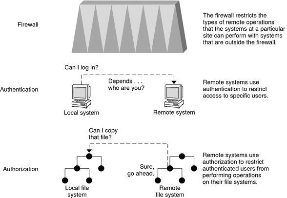

System Administration Guide: Security Services
|
||||||||||||||||||||||||||||
|
1. Security Services (Overview) Part II System, File, and Device Security 2. Managing Machine Security (Overview) Enhancements to Machine Security in the Solaris 10 Release Controlling Access to a Computer System Controlling Access to Machine Resources 3. Controlling Access to Systems (Tasks) 4. Virus Scanning Service (Tasks) 5. Controlling Access to Devices (Tasks) 6. Using the Basic Audit Reporting Tool (Tasks) 7. Controlling Access to Files (Tasks) Part III Roles, Rights Profiles, and Privileges 8. Using Roles and Privileges (Overview) 9. Using Role-Based Access Control (Tasks) 10. Role-Based Access Control (Reference) Part IV Solaris Cryptographic Services 13. Solaris Cryptographic Framework (Overview) 14. Solaris Cryptographic Framework (Tasks) 15. Solaris Key Management Framework Part V Authentication Services and Secure Communication 16. Using Authentication Services (Tasks) 19. Using Solaris Secure Shell (Tasks) 20. Solaris Secure Shell (Reference) 21. Introduction to the Kerberos Service 22. Planning for the Kerberos Service 23. Configuring the Kerberos Service (Tasks) 24. Kerberos Error Messages and Troubleshooting 25. Administering Kerberos Principals and Policies (Tasks) 26. Using Kerberos Applications (Tasks) 27. The Kerberos Service (Reference) 28. Solaris Auditing (Overview) 29. Planning for Solaris Auditing 30. Managing Solaris Auditing (Tasks) |
Controlling Network AccessComputers are often part of a configuration of computers. This configuration is called a network. A network allows connected computers to exchange information. Networked computers can access data and other resources from other computers on the network. Computer networks create a powerful and sophisticated computing environment. However, networks also complicate computer security. For example, within a network of computers, individual machines allow the sharing of information. Unauthorized access is a security risk. Because many people have access to a network, unauthorized access is more likely, especially through user error. A poor use of passwords can also allow unauthorized access. Network Security MechanismsNetwork security is usually based on limiting or blocking operations from remote systems. The following figure describes the security restrictions that you can impose on remote operations. Figure 2-1 Security Restrictions for Remote OperationsAuthentication and Authorization for Remote AccessAuthentication is a way to restrict access to specific users when these users access a remote system. Authentication can be set up at both the system level and the network level. After a user has gained access to a remote system, authorization is a way to restrict operations that the user can perform. The following table lists the services that provide authentication and authorization. Table 2-3 Authentication and Authorization Services for Remote Access
A possible substitute for Secure RPC is the Solaris privileged port mechanism. A privileged port is assigned a port number less than 1024. After a client system has authenticated the client's credential, the client builds a connection to the server by using the privileged port. The server then verifies the client credential by examining the connection's port number. Clients that are not running Solaris software might be unable to communicate by using the privileged port. If the clients cannot communicate over the port, you see an error message that is similar to the following: “Weak Authentication NFS request from unprivileged port” Firewall SystemsYou can set up a firewall system to protect the resources in your network from outside access. A firewall system is a secure host that acts as a barrier between your internal network and outside networks. The internal network treats every other network as untrusted. You should consider this setup as mandatory between your internal network and any external networks, such as the Internet, with which you communicate. A firewall acts as a gateway and as a barrier. A firewall acts as a gateway that passes data between the networks. A firewall acts as a barrier that blocks the free passage of data to and from the network. The firewall requires a user on the internal network to log in to the firewall system to access hosts on remote networks. Similarly, a user on an outside network must first log in to the firewall system before being granted access to a host on the internal network. A firewall can also be useful between some internal networks. For example, you can set up a firewall or a secure gateway computer to restrict the transfer of packets. The gateway can forbid packet exchange between two networks, unless the gateway computer is the source address or the destination address of the packet. A firewall should also be set up to forward packets for particular protocols only. For example, you can allow packets for transferring mail, but not allow packets for the telnet or the rlogin command. In addition, all electronic mail that is sent from the internal network is first sent to the firewall system. The firewall then transfers the mail to a host on an external network. The firewall system also receives all incoming electronic mail, and distributes the mail to the hosts on the internal network. Caution - A firewall prevents unauthorized users from accessing the hosts on your network. You should maintain strict and rigidly enforced security on the firewall, but security on other hosts on the network can be more relaxed. However, an intruder who can break into your firewall system can then gain access to all the other hosts on the internal network. A firewall system should not have any trusted hosts. A trusted host is a host from which a user can log in without being required to supply a password. A firewall system should not share any of its file systems, or mount any file systems from other servers. The following technologies can be used to harden a system into a firewall:
Encryption and Firewall SystemsMost local area networks transmit data between computers in blocks that are called packets. Through a procedure that is called packet smashing, unauthorized users from outside the network can corrupt or destroy data. Packet smashing involves capturing the packets before the packets reach their destination. The intruder then injects arbitrary data into the contents, and sends the packets back on their original course. On a local area network, packet smashing is impossible because packets reach all systems, including the server, at the same time. Packet smashing is possible on a gateway, however, so make sure that all gateways on the network are protected. The most dangerous attacks affect the integrity of the data. Such attacks involve changing the contents of the packets or impersonating a user. Attacks that involve eavesdropping do not compromise data integrity. An eavesdropper records conversations for later replay. An eavesdropper does not impersonate a user. Although eavesdropping attacks do not attack data integrity, the attacks do affect privacy. You can protect the privacy of sensitive information by encrypting data that goes over the network.
|
|||||||||||||||||||||||||||
|